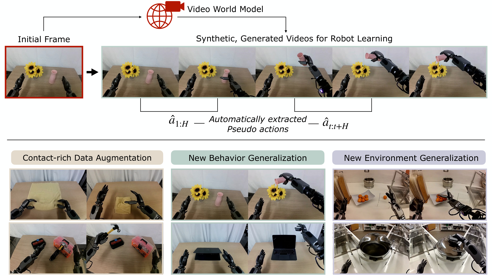
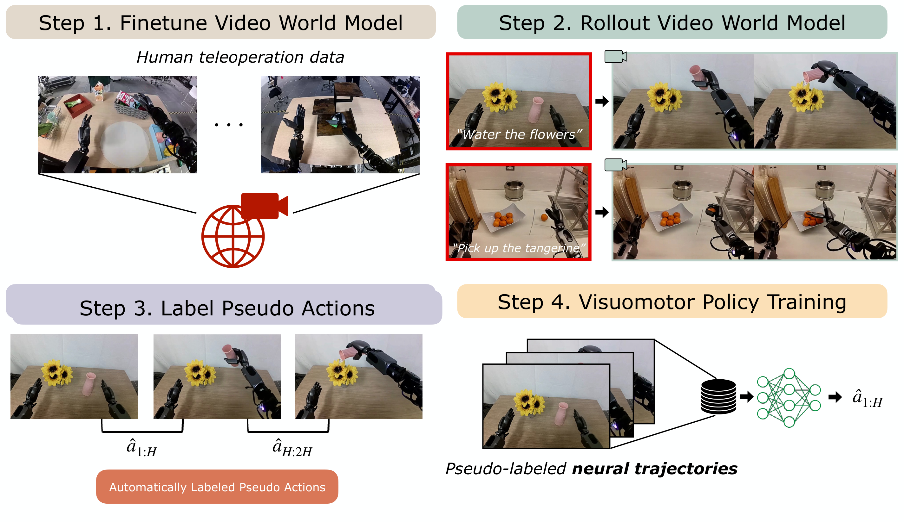
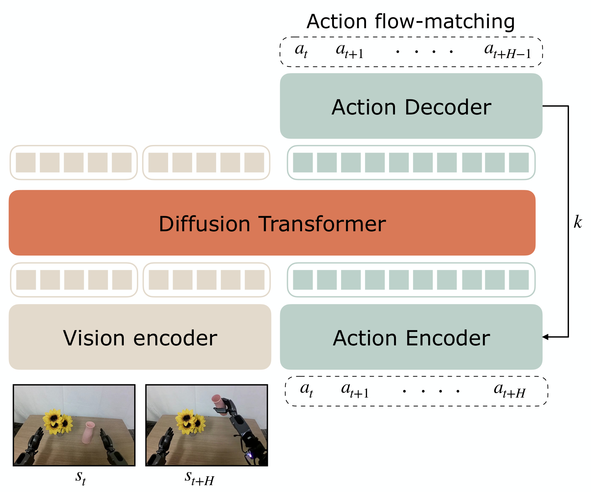
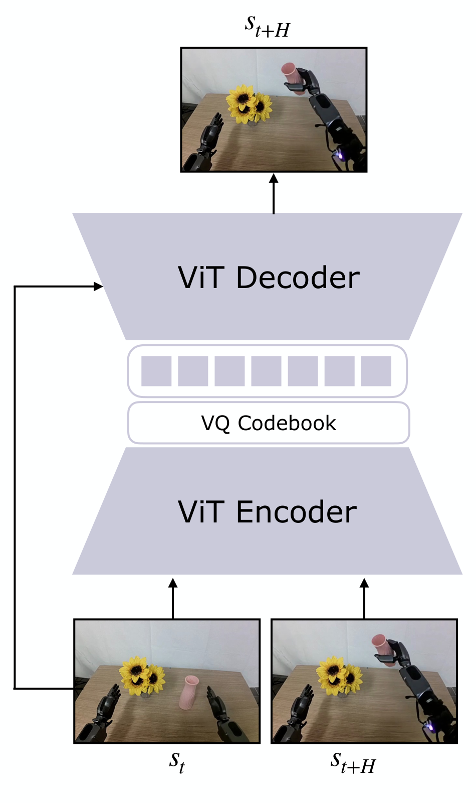
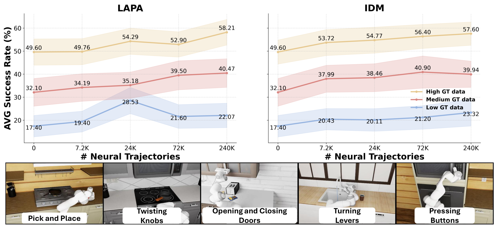
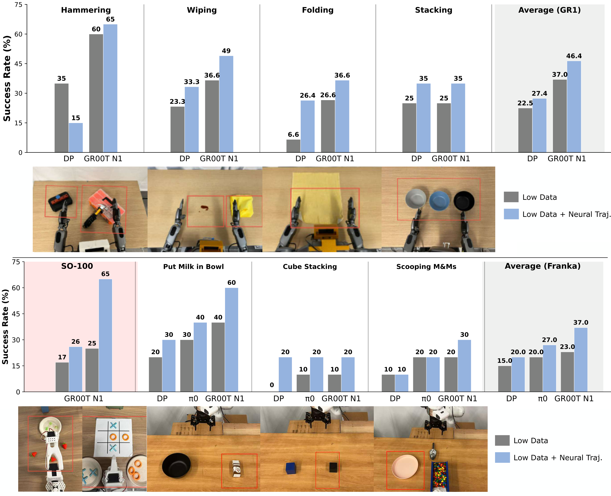
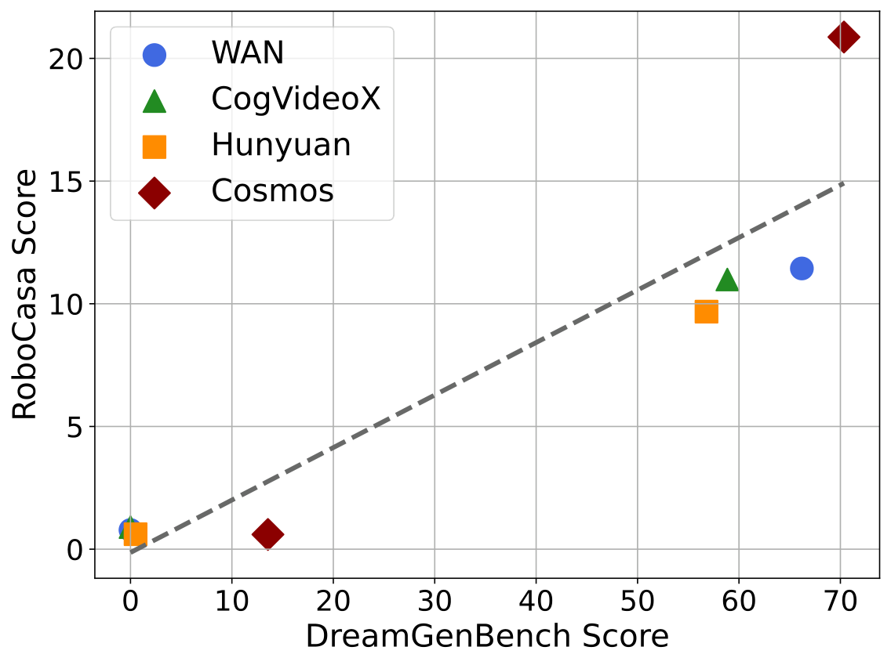

W10. DREAM GEN: Unlocking Generalization in Robot Learning through Video World Models¶
0. 읽기 전 약어 및 핵심 용어¶
이 문서를 읽기 전에 아래 약어와 용어를 먼저 정리한다. 이후 본문에서는 괄호 안의 약어를 사용한다.
- Artificial Intelligence (AI): 사람의 지각, 추론, 학습, 의사결정 능력을 기계가 수행하도록 만드는 인공지능 분야를 뜻한다.
- Vision-Language Model (VLM): 이미지와 텍스트를 함께 입력받아 시각-언어 이해나 생성 작업을 수행하는 모델이다.
- Vision-Language (VL): 시각 정보와 언어 정보를 함께 다루는 multimodal setting을 뜻한다.
- Reinforcement Learning (RL): agent가 reward를 최대화하도록 environment와 상호작용하며 policy를 학습하는 방법이다.
- Variational Autoencoder (VAE): latent variable의 확률분포를 학습해 data를 생성하거나 압축하는 generative model이다.
- Vector Quantization (VQ): continuous representation을 discrete codebook vector로 양자화하는 방법이다.
- Vector-Quantized Variational Autoencoder (VQ-VAE): latent를 discrete codebook으로 양자화하는 variational autoencoder 계열 generative model이다.
- Generalist Robot 1 (GR1): GR-1을 하이픈 없이 줄여 쓴 표기이며 humanoid/generalist robot policy 계열을 뜻한다.
- Generalist Robot 00 Technology (GR00T): NVIDIA가 humanoid/generalist robot을 위해 공개한 robot foundation model family 이름이다.
- Inverse Dynamics Model (IDM): 현재와 다음 관측을 보고 그 변화를 만든 action을 추정하는 model이다.
- Latent Action Pretraining from videos (LAPA): video에서 latent action representation을 학습해 downstream robot policy에 활용하는 pretraining 계열 접근이다.
- Korea Advanced Institute of Science and Technology (KAIST): 대한민국의 과학기술 특성화 대학이다.
- Nanyang Technological University (NTU): 싱가포르의 연구중심 대학이다.
- University of California, Los Angeles (UCLA): 미국 캘리포니아대학교 로스앤젤레스 캠퍼스다.
- University of California, San Diego (UCSD): 미국 캘리포니아대학교 샌디에이고 캠퍼스다.
- Physical Artificial Intelligence (Physical AI): 디지털 공간의 예측을 넘어 물리 세계에서 지각, 예측, 계획, 행동, 안전 검사를 수행하는 AI 시스템을 뜻한다.
1. Metadata¶
| Field | 내용 |
|---|---|
| ID | W10 |
| Title | DREAM GEN: Unlocking Generalization in Robot Learning through Video World Models |
| Authors | Joel Jang, Seonghyeon Ye, Zongyu Lin, Jiannan Xiang, Johan Bjorck, Yu Fang, Fengyuan Hu, Spencer Huang, Kaushil Kundalia, Lin Yen-Chen, Loic Magne, Ajay Mandlekar, Avnish Narayan, You Liang Tan, Guanzhi Wang, Jing Wang, Qi Wang, Yinzhen Xu, Xiaohui Zeng, Kaiyuan Zheng, Ruijie Zheng, Ming-Yu Liu, Luke Zettlemoyer, Dieter Fox, Jan Kautz, Scott Reed, Yuke Zhu, Linxi Fan |
| Affiliation / Team | NVIDIA, University of Washington, KAIST, UCLA, UCSD, CalTech, NTU, University of Maryland, UT Austin |
| Venue / Status | arXiv / robotics preprint |
| Date | 2025-05-19, v2 2025-06-17 |
| Link | https://arxiv.org/abs/2505.12705 |
| Project page | https://research.nvidia.com/labs/gear/dreamgen |
| Local source | paper_corpus/sources/W10 |
| Source figures | paper_corpus/figures_source/W10/manifest.md |
2. 핵심 요약¶
DREAM GEN은 video world model을 robot policy의 synthetic data generator로 사용하는 4-stage pipeline이다. 핵심 개념은 neural trajectories다. Video world model이 initial frame과 language instruction을 받아 robot video rollout을 생성하면, 그 video에는 action label이 없기 때문에 inverse dynamics model 또는 latent action model로 pseudo-action을 붙인다. 이렇게 만든 video-action sequence를 neural trajectory라고 부르고, 이를 visuomotor policy training data로 사용한다.
가장 중요한 메시지는 "video world model을 planner로 실시간 사용하지 말고, offline synthetic data generator로 쓰자"는 것이다. 이 방식은 inference latency 요구가 낮고, internet-scale video prior를 충분히 활용할 수 있다. 논문은 pick-and-place 한 종류의 teleoperation data만으로 GR1 humanoid가 novel behaviors와 novel environments에서 성능을 얻는 결과를 제시한다.
3. 왜 중요한가?¶
- UniSim이 simulator-generated experience로 policy를 학습했다면, DREAM GEN은 최신 image-to-video world model을 robot data augmentation 엔진으로 직접 사용한다.
- Video-only synthetic rollout에 pseudo-action을 붙여 실제 policy training dataset으로 바꾸는 bridge를 제시한다.
- Manual teleoperation collection 없이 behavior generalization과 environment generalization을 얻는 방향을 보여준다.
- DreamGen Bench를 통해 video generation benchmark와 downstream robot policy success의 상관을 평가한다.
- Physical AI 연구에서 "world model의 품질을 어떻게 robot learning 성능과 연결할 것인가"라는 질문에 실용적인 답을 준다.
4. Generalization through Neural Trajectories¶

Figure 1. Generalization through DREAM GEN. Video world models generate synthetic robot videos that enable policies to generalize to new behaviors and environments from limited teleoperation data. Source figure: assets/figure_1_neural.pdf.
DREAM GEN의 핵심 흐름은 다음과 같다.
| 요소 | 의미 |
|---|---|
| Human teleoperation data | target robot embodiment를 fine-tune하기 위한 소량의 real trajectories |
| Video world model | initial frame + instruction에서 synthetic robot video 생성 |
| Pseudo-action labeler | generated video에 action sequence를 붙이는 IDM 또는 latent action model |
| Neural trajectory | generated video + pseudo actions |
| Visuomotor policy | neural trajectories로 학습되는 downstream robot policy |
이때 generated video는 단순한 시각 자료가 아니라, policy가 imitation/RL-style training에 사용할 수 있는 trajectory dataset이 된다.
5. Four-Stage Pipeline¶

Figure 2. DREAM GEN overview. Fine-tune a video world model, roll it out from initial frames and language instructions, infer pseudo-actions, then train visuomotor policies on neural trajectories. Source figure: assets/figure2_3.pdf.
| Stage | 설명 |
|---|---|
| 1. Video world model fine-tuning | target robot의 teleoperated trajectories로 robot kinematics와 embodiment dynamics를 학습 |
| 2. Video world model rollout | initial frame과 language instruction으로 synthetic robot videos 생성 |
| 3. Pseudo-action labeling | IDM 또는 LAPA로 generated videos에 action label 부여 |
| 4. Policy training | neural trajectories를 사용해 Diffusion Policy, \(\pi_0\), GR00T N1 등을 학습 |
Stage 1에서는 LoRA를 기본으로 사용해 video world model을 robot domain에 적응시키고, internet video prior의 catastrophic forgetting을 줄인다. Stage 2에서는 simulation이면 simulator에서 새로운 initial frame을 뽑고, real-world이면 target object 위치를 randomize하며 initial frame을 촬영한다.
6. Neural Trajectory Formulation¶
Generated video rollout은 다음처럼 볼 수 있다.
| Notation | 의미 |
|---|---|
| \(G_{\phi}\) | fine-tuned video world model |
| \(\mathbf{o}_1\) | initial observation frame |
| \(\ell\) | language instruction |
| \(\hat{\mathbf{o}}_{1:T}\) | generated robot observation/video sequence |
| \(\phi\) | video world model parameters |
Pseudo-action model은 generated observations에서 action chunk를 추정한다.
| Notation | 의미 |
|---|---|
| \(Q_{\psi}\) | pseudo-action labeler, IDM 또는 latent action model |
| \(\hat{\mathbf{o}}_{t}\) | generated video의 current frame |
| \(\hat{\mathbf{o}}_{t+H}\) | \(H\) step 이후 generated future frame |
| \(\hat{\mathbf{a}}_{t:t+H}\) | pseudo action chunk |
| \(H\) | action prediction horizon |
최종 neural trajectory는 generated observations와 pseudo actions의 pair다.
| Notation | 의미 |
|---|---|
| \(\tau_{\mathrm{neural}}\) | neural trajectory |
| \(\hat{\mathbf{o}}_{1:T}\) | generated observation sequence |
| \(\hat{\mathbf{a}}_{1:T}\) | pseudo-labeled action sequence |
Policy는 image observation과 instruction이 주어졌을 때 action chunk를 생성하도록 학습된다.
| Notation | 의미 |
|---|---|
| \(\pi_{\theta}\) | downstream visuomotor policy |
| \(\hat{\mathbf{o}}_t\) | training input observation |
| \(\ell\) | task instruction |
| \(\hat{\mathbf{a}}_{t:t+H}\) | target pseudo-action chunk |
7. Pseudo-Action Labeling¶


Figure 3. Pseudo-action extraction. DREAM GEN uses either an inverse dynamics model or a latent action model to label generated robot videos. Source figures: assets/idm.pdf, assets/lapa.pdf.
논문은 두 가지 pseudo-action labeling 방식을 사용한다.
| 방식 | 입력 | 출력 | 장점 |
|---|---|---|---|
| IDM | two image frames | action chunk | target robot의 실제 action space에 맞는 label 생성 가능 |
| LAPA | current and future frame | latent action embedding | ground-truth robot action 없이도 latent action label 생성 가능 |
IDM은 SigLIP-2 vision encoder와 diffusion transformer를 사용하고 flow matching objective로 action chunk를 예측한다. Sliding window로 \(\hat{a}_t\)부터 \(\hat{a}_{t+H}\)까지 예측하고 한 step씩 밀어 전체 generated video에 action을 붙인다.
LAPA는 VQ-VAE 방식의 latent action model로, visual delta를 설명하는 latent action을 만든다. GR00T N1처럼 latent action을 policy target으로 사용할 수 있는 경우 유용하다.
8. Data Augmentation Results¶

Figure 4. RoboCasa scaling. Increasing neural trajectories improves downstream policy performance across low, mid, and high ground-truth data regimes. Source figure: assets/sim_result_2.pdf.
RoboCasa simulation에서는 neural trajectories를 최대 original human demonstrations 대비 333x까지 늘린다. 결과는 neural trajectory 수가 증가할수록 policy performance가 log-linear하게 증가한다. 이는 synthetic data generation이 manual teleoperation보다 훨씬 scalable한 robot learning axis가 될 수 있음을 보여준다.

Figure 5. Real-world robot evaluation. Neural trajectories improve policy success across GR1 humanoid, Franka, and SO-100 tasks. Source figure: assets/real_world_unified.pdf.
Real-world experiments에서는 9개 task, 3개 embodiment를 사용한다.
| Robot | Tasks | Reported average success gain |
|---|---|---|
| Fourier GR1 | hammering, wiping, folding, stacking | 37% to 46.4% |
| Franka Emika | pick-and-place, cube stacking, tool use | 23% to 37% |
| SO-100 | picking strawberries, tic-tac-toe | 21% to 45.5% |
특히 hammering, wiping liquid, folding towel, scooping M&Ms 같은 task는 classic simulator로 synthetic data를 만들기 어려운 contact-rich/deformable/tool-use task라는 점이 중요하다.
9. Behavior and Environment Generalization¶
DREAM GEN은 GR1 humanoid에서 pick-and-place data만으로 novel behavior와 novel environment generalization을 실험한다. Original teleoperation data에는 pick-and-place만 있고, pouring, opening/closing articulated objects, using tools 같은 verb는 없다.
| Setting | Baseline GR00T N1 | w/ DREAM GEN |
|---|---|---|
| Seen environments, novel behaviors | 11.2% | 43.2% |
| Novel environments, seen and novel behaviors | 0.0% | 28.5% |
이 결과는 "비디오 world model이 pretraining에서 얻은 physics/natural motion/language prior를 robot policy dataset으로 전환할 수 있다"는 주장을 뒷받침한다. 다만 성능이 완전한 해결책 수준은 아니며, generated video 품질과 pseudo-action 품질에 크게 의존한다.
10. DreamGen Bench¶

Figure 6. DreamGen Bench correlation. Benchmark quality of video world models correlates with downstream policy performance after generating neural trajectories. Source figure: assets/scatter_plot.pdf.
DreamGen Bench는 video world model이 robot embodiment에 얼마나 잘 적응하고, unseen object, unseen behavior, unseen environment를 얼마나 물리적으로 그럴듯하게 생성하는지 평가한다.
| Metric | 의미 |
|---|---|
| Instruction Following | generated video가 instruction의 task를 수행하는가 |
| Physics Alignment | robot kinematics와 physical interaction이 그럴듯한가 |
| Evaluators | GPT-4o, Qwen2.5-VL, human evaluation |
비교한 모델은 Hunyuan, CogVideoX, WAN2.1, Cosmos의 zero-shot 및 fine-tuned variants다. 전반적으로 zero-shot 모델은 robot-specific video generation에서 매우 약하고, fine-tuning 이후 instruction/physics score가 크게 올라간다. 논문은 benchmark score가 downstream policy success와 상관된다고 보고한다.
11. UniSim과 비교해서 읽기¶
| 관점 | UniSim | DREAM GEN |
|---|---|---|
| World model 역할 | action-conditioned simulator | synthetic robot data generator |
| Action label | simulator action input으로 직접 사용 | generated video 후 pseudo-action을 추정 |
| Policy learning | simulator rollout으로 VLM/RL policy 학습 | neural trajectories로 imitation-style policy 학습 |
| Data source | broad mixed datasets | video world model + target robot fine-tuning |
| 핵심 bottleneck | visual-only simulator reliability | video quality와 pseudo-action quality |
UniSim은 simulator 자체가 action-conditioned model이고, DREAM GEN은 이미 강력한 video world model을 target robot에 맞게 fine-tune한 뒤 pseudo-action으로 policy data화한다. 두 방법은 경쟁이라기보다 서로 다른 data-generation interface다.
12. Limitations¶
| 한계 | 설명 |
|---|---|
| Initial frame collection | 새 환경/객체의 initial frame은 여전히 촬영해야 한다. |
| Pseudo-action noise | IDM/LAPA가 generated video motion을 잘못 action으로 변환하면 policy가 오염된다. |
| Video model bias | generated trajectories는 video world model의 hallucination과 physics error를 포함한다. |
| State/proprioception gap | neural trajectories에는 true state가 없어 zero state를 넣어 학습한다. |
| Evaluation scale | 많은 real-world robot rollouts가 필요하고, task별 scoring rule이 복잡하다. |
| Novel behavior ceiling | baseline보다 크게 오르지만 success rate는 아직 완성 단계가 아니다. |
논문은 future work로 image-to-image diffusion을 사용해 initial frame randomization 부담을 줄이는 방향을 언급한다.
13. 발표 구성 제안¶
- Teleoperation data collection bottleneck과 sim2real gap을 문제로 제시한다.
- Figure 1로 neural trajectory가 무엇인지 직관적으로 설명한다.
- Figure 2로 DREAM GEN의 4-stage pipeline을 정리한다.
- IDM/LAPA figure와 수식으로 video-only rollout을 action-labeled trajectory로 바꾸는 bridge를 설명한다.
- RoboCasa scaling과 real-world results를 통해 data augmentation 효과를 보여준다.
- Behavior/environment generalization table로 zero-to-one improvement를 강조한다.
- DreamGen Bench를 통해 video world model evaluation과 downstream policy success 연결을 토론한다.
14. 토론 질문¶
- Generated video가 photorealistic해도 pseudo-action이 틀리면 policy는 어떻게 망가질까?
- DREAM GEN에서 world model을 planner가 아니라 data generator로 쓰는 선택은 어떤 장단점이 있을까?
- Neural trajectories만으로 학습한 policy가 실제 robot safety를 만족하려면 어떤 filtering이나 validation이 필요할까?
- DreamGen Bench 같은 video benchmark가 실제 robot learning 성능을 충분히 예측할 수 있을까?
15. 한 줄 정리¶
DREAM GEN은 video world model이 생성한 robot videos에 pseudo-actions를 붙인 neural trajectories를 통해, 적은 teleoperation data로 robot policy의 behavior/environment generalization을 크게 확장하는 synthetic data pipeline이다.